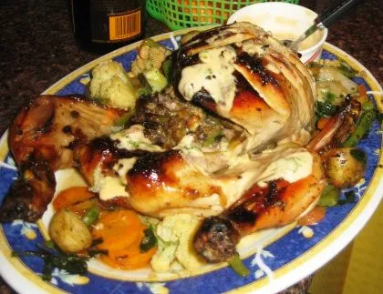
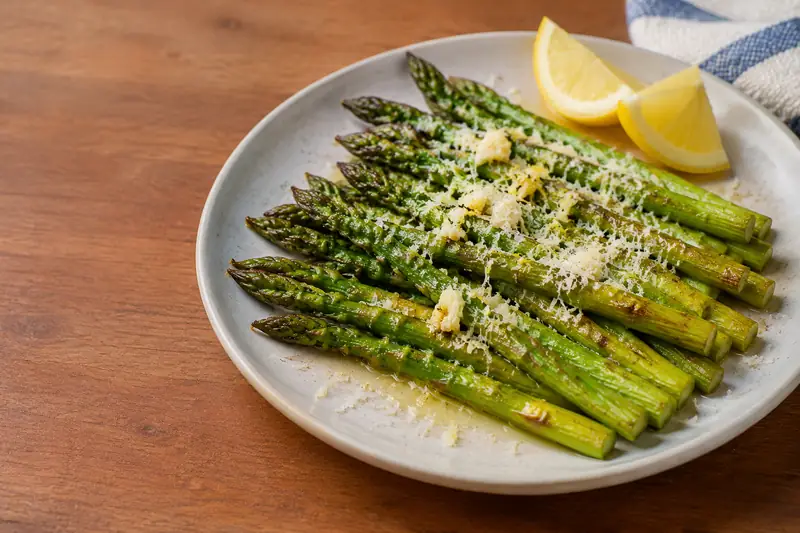

Fruit水果
Lemons柠檬
seen on costco.ca or in the Surrey warehouse listingCostco 目录/仓库可见
At Costco在 Costco
Typical pack常见规格: Lemons, 2.27 kg柠檬，2.27 公斤
Price varies; check the warehouse or costco.ca.价格随时变化，请看仓库或 costco.ca。
Sample date取样日期 2026-11-16. Availability varies by warehouse and season; this is not a stock guarantee.有无因门店和季节而异，不是库存保证。
Store and portion储存与分装
Most fruit keeps 3-7 days chilled; ripen bananas and avocados at room temperature, then refrigerate; wash berries only before eating.多数水果冷藏 3–7 天；香蕉、牛油果常温催熟后再冷藏；莓类吃前再洗。
Freeze berries and cut fruit on a tray, then bag them for breakfasts and smoothies.莓类和切块水果可平铺冷冻再装袋，做早餐或冰沙很方便。
Per 100 g (Canadian Nutrient File)每 100 克（加拿大营养素数据库）
Lemon, raw, without peel · code 1587
29 kcal · protein蛋白 1.1 g · fat脂肪 0.3 g · carbs碳水 9.32 g · fibre纤维 2.8 g · sodium钠 2 mg
No priority allergen.无重点过敏原。
Recipes with this用到它的菜
 Chicken Caesar Salad with Homemade Dressing and Croutons凯撒沙拉配烤鸡（自制酱汁和面包丁）45 min分钟 · 2 servings份 · Western西式
Chicken Caesar Salad with Homemade Dressing and Croutons凯撒沙拉配烤鸡（自制酱汁和面包丁）45 min分钟 · 2 servings份 · Western西式 Greek Chicken Souvlaki with Tzatziki希腊柠檬烤鸡串配酸奶黄瓜酱65 min分钟 · 4 servings份 · Greek / Mediterranean希腊/地中海
Greek Chicken Souvlaki with Tzatziki希腊柠檬烤鸡串配酸奶黄瓜酱65 min分钟 · 4 servings份 · Greek / Mediterranean希腊/地中海 Greek Roast Leg of Lamb with Lemon Potatoes希腊烤羊腿185 min分钟 · 6 servings份 · Greek / Mediterranean希腊/地中海Karaage Fried Chicken日式炸鸡53 min分钟 · 2 servings份 · Japanese日
Greek Roast Leg of Lamb with Lemon Potatoes希腊烤羊腿185 min分钟 · 6 servings份 · Greek / Mediterranean希腊/地中海Karaage Fried Chicken日式炸鸡53 min分钟 · 2 servings份 · Japanese日 Lemon Butter Baked Cod柠檬黄油烤鳕鱼22 min分钟 · 2 servings份 · Western西式Lemon Chicken Orzo柠檬鸡肉米粒面45 min分钟 · 4 servings份 · Greek / Mediterranean希腊/地中海Pan-Seared Salmon with Soy Butter酱油黄油煎三文鱼15 min分钟 · 2 servings份 · Chinese home-style家常
Lemon Butter Baked Cod柠檬黄油烤鳕鱼22 min分钟 · 2 servings份 · Western西式Lemon Chicken Orzo柠檬鸡肉米粒面45 min分钟 · 4 servings份 · Greek / Mediterranean希腊/地中海Pan-Seared Salmon with Soy Butter酱油黄油煎三文鱼15 min分钟 · 2 servings份 · Chinese home-style家常
Roast Chicken with Root Vegetables烤全鸡（西式，配根茎蔬菜）170 min分钟 · 4 servings份 · Western西式
Garlic Roasted Asparagus蒜香烤芦笋17 min分钟 · 3 servings份 · Western西式 Rosemary Garlic Lamb Chops迷迭香煎羊排37 min分钟 · 2 servings份 · Western西式
Rosemary Garlic Lamb Chops迷迭香煎羊排37 min分钟 · 2 servings份 · Western西式 Sheet-Pan Salmon with Potatoes and Broccoli三文鱼烤盘餐50 min分钟 · 4 servings份 · Western西式
Sheet-Pan Salmon with Potatoes and Broccoli三文鱼烤盘餐50 min分钟 · 4 servings份 · Western西式 Shrimp Scampi Pasta蒜香黄油虾意面25 min分钟 · 3 servings份 · Italian意Tonkatsu日式炸猪排50 min分钟 · 4 servings份 · Japanese日Roast Turkey烤火鸡240 min分钟 · 8 servings份 · Western西式
Shrimp Scampi Pasta蒜香黄油虾意面25 min分钟 · 3 servings份 · Italian意Tonkatsu日式炸猪排50 min分钟 · 4 servings份 · Japanese日Roast Turkey烤火鸡240 min分钟 · 8 servings份 · Western西式